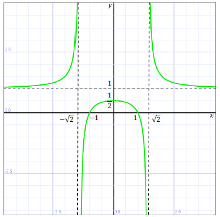

Jesteś tutaj: Studia → Badanie przebiegu zmienności funkcji II →
Badanie przebiegu zmienności funkcji -
przykład 1
Badanie przebiegu zmienności funkcji - przykład 1
Zbadaj przebieg zmienności funkcji:
\[f(x)=\frac{1}{x^{2}-2}+1\] Rozwiązanie:
Musimy wyznaczyć:
- Dziedzinę.
- Miejsca zerowe.
- Punkt przecięcia z osią Oy.
- Granice na krańcach dziedziny.
- Asymptoty.
- Przedziały monotoniczności.
- Ekstrema.
- Przedziały wklęsłości i wypukłości.
- Punkty przegięcia.
- Wyznaczamy dziedzinę funkcji.
Sprawdzamy kiedy zeruje się mianownik: \[\begin{split} x^{2}-2&=0\\x^{2}&=2\\x=\sqrt{2}\quad &\lor \quad x=-\sqrt{2} \end{split}\] Zatem dziedzina funkcji to: \[\mathbb{R}\backslash\{-\sqrt{2},\sqrt{2}\}\] - Wyznaczamy miejsca zerowe funkcji.
Przyrównujemy wzór funkcji do zera i rozwiązujemy takie równanie: \[\begin{split} \quad\quad\quad \quad \quad \frac{1}{x^{2}-2}+1&=0\\\frac{1}{x^{2}-2}&=-1\quad\quad \quad \quad / \cdot (x^{2}-2)\\1&=-(x^{2}-2)\\1&=-x^{2}+2\\x^{2}&=1\\x=1\quad &\lor\quad x=-1 \end{split}\] Zatem miejscami zerowymi funkcji są: \( x=-1 \) oraz \( x=1 \). - Wyznaczamy punkt przecięcia z osią \(Oy\)
W tym celu liczymy wartość funkcji zerze: \[f(0)= \frac{1}{0^{2}-2}+1=\frac{1}{-2}+1=-\frac{1}{2}+1=\frac{1}{2}\] Zatem punkt przecięcia funkcji z osią \(Oy\), to: \(\left (0,\frac{1}{2}\right )\). - Wyznaczamy granice na krańcach dziedziny.
Tutaj zawsze należy wyznaczyć granice funkcji w \( +\infty \) oraz \( -\infty \).
W tym przypadku będziemy musieli dodatkowo policzyć granice funkcji dla \( x \)-ów, które wypadły z dziedziny (bo tam funkcja jest nieciągła), czyli dla \( x=\sqrt{2} \) oraz \( x=-\sqrt{2} \).
Zaczynamy od przypadków w nieskończonościach:
\[\lim_{x \to +\infty}f(x)=\lim_{x \to +\infty}\bigg(\frac{1}{x^{2}-2}+1\bigg)=\bigg[\frac{1}{+\infty }+1\bigg]=[0+1]=1\] \[\lim_{x \to -\infty}f(x)=\lim_{x \to -\infty}\bigg(\frac{1}{x^{2}-2}+1\bigg)=\bigg[\frac{1}{+\infty }+1\bigg]=[0+1]=1\] Uwaga! Wyliczone granice w \( +\infty \) oraz \( -\infty \) od razu dają nam asymptotę poziomą, która w tym przypadku jest prostą o równaniu \( y=1 \). Będzie o tym jeszcze mowa w kolejnym punkcie.
Teraz obliczymy granice w punktach, kóre nie należą do dziedziny: Liczymy granicę lewostronną dla \( x=\sqrt{2} \): \[\begin{split} \lim_{x \to \sqrt{2}^{-}}f(x)&=\lim_{x \to \sqrt{2}^{-}}\left(\frac{1}{x^{2}-2}+1\right)=\left[\frac{1}{(\sqrt{2}^{-})^{2}-2}+1\right]= \left [\frac{1}{2^{-}-2}+1 \right ]=\\&=\left [ \frac{1}{{0}^{-}}+1 \right ]=\left [ -\infty +1 \right ]=-\infty \end{split}\] Wyjaśnienie oznaczeń:
\(\begin{split} {\left ( {\sqrt{2}}^{-} \right )}^{2} \end{split}\) - to liczba trochę mniejsza od \( \sqrt{2} \) podniesiona do kwadratu (np. \( {1,41}^{2} \)).Teraz podobnie liczymy granicę prawostronną dla \( x=\sqrt{2} \):
\( {2}^{-} \) - liczba trochę mniejsza od \( 2 \) (np. \( 1,99 \)).
\( {0}^{-} \) - liczba trochę mniejsza od \( 0 \) (np. \( -0,01 \)).
\[\begin{split} \lim_{x \to \sqrt{2}^{+}}f(x)&=\lim_{x \to \sqrt{2}^{+}}\left(\frac{1}{x^{2}-2}+1\right)=\left[\frac{1}{(\sqrt{2}^{+})^{2}-2}+1\right]= \left [\frac{1}{2^{+}-2}+1 \right ]=\\&=\left [ \frac{1}{{0}^{+}}+1 \right ]=\left [ +\infty +1 \right ]=+\infty \end{split}\] Zatem dla \(\begin{split} x=\sqrt{2 } \end{split}\) granice obustronne istnieją, ale są różne, więc granica dla \(\begin{split} x =\sqrt{2 } \end{split}\) nie istnieje. Zapiszemy to tak: \[\lim_{x \to \sqrt{2}^{-}}f(x)=-\infty \\\lim_{x \to \sqrt{2}^{+}}f(x)=+\infty \] Zatem: \[\lim_{x \to \sqrt{2}}f(x)=\text{nie istnieje}\] Teraz musimy wykonać podobne rachunki dla drugiego punktu nie należącego do dziedziny. Liczymy zatem granicę lewostronną dla \(\begin{split} x=-\sqrt{2} \end{split}\): \[\begin{split} \lim_{x \to -\sqrt{2}^{-}}f(x)&=\lim_{x \to -\sqrt{2}^{-}}\left(\frac{1}{x^{2}-2}+1\right)=\left[\frac{1}{\left ( -{\sqrt{2}}^{-} \right )^2-2}+1\right]=\\&= \left [\frac{1}{2^{+}-2}+1 \right ]=\left [ \frac{1}{{0}^{+}}+1 \right ]=\left [ +\infty +1 \right ]=+\infty \end{split}\] Uwaga! Zauważ, że liczba \(\begin{split} \left ( -{\sqrt{2}}^{-} \right )^2 \end{split}\) jest trochę większa od \( 2 \), bo to jest np.: \( \left ( -1,41 \right )^2=2,0164 \)
Teraz podobnie liczymy granicę prawostronną dla \(\begin{split} x=-\sqrt{2} \end{split}\): \[\begin{split} \lim_{x \to -\sqrt{2}^{+}}f(x)&=\lim_{x \to -\sqrt{2}^{+}}\left(\frac{1}{x^{2}-2}+1\right)=\left[\frac{1}{\left ( -{\sqrt{2}}^{+} \right )^2-2}+1\right]= \left [\frac{1}{2^{-}-2}+1 \right ]=\\&=\left [ \frac{1}{{0}^{-}}+1 \right ]=\left [ -\infty +1 \right ]=-\infty \end{split}\] Zatem dla \( x=-\sqrt{2} \) granice obustronne istnieją, ale są różne, więc granica dla \( x=-\sqrt{2} \) nie istnieje. Zapiszemy to tak: \[\lim_{x \to -\sqrt{2}^{-}}f(x)=+\infty \\\lim_{x \to -\sqrt{2}^{+}}f(x)=-\infty \] Zatem: \[\lim_{x \to -\sqrt{2}}f(x)= \text{nie istnieje}\] - Wyznaczamy asymptoty.
Asymptoty pionowe już wyznaczyliśmy przy wyznaczaniu dziedziny - są nimi proste pionowe, przechodzące przez punkty, które nie należą do dziedziny.
Zatem asymptoty pionowe, to proste opisane równaniami: \[x=-\sqrt{2}\] oraz \[x=\sqrt{2}\] Asymptoty poziome istnieją, jeżeli granice w \( +\infty \) oraz \( -\infty \)istnieją i są skończone.
Już wyliczyliśmy, że: \[\lim_{x \to +\infty}f(x)=1\\\lim_{x \to -\infty}f(x)=1\] Zatem asymptota pozioma istnieje i jej równanie, to: \[y=1\] Asymptoty ukośne nie istnieją, bo istnieją asymptoty poziome. Normalnie asymptotę ukośną prawostronną wyznaczamy obliczając granice: \[\lim_{x \to +\infty}\frac{f(x)}{x}=a\] oraz \[\lim_{x \to +\infty}\left ( f(x)-ax \right )=b\] Jeśli obie te granice istnieją i są skończone (czyli 2 i 3 są liczbami rzeczywistymi skończonymi), to asymptota prawostronna jest opisana równaniem: \[y=ax+b\] Tak samo obliczamy asymptotę ukośną lewostronną, tylko że liczymy granice w \( -\infty \). - Wyznaczamy przedziały monotoniczności.
Aby wyznaczyć przedziały monotoniczności (oraz ekstrema), to musimy obliczyć pochodną funkcji. Zatem liczymy: \[f'(x)=\left ( \frac{1}{x^2 -2}+1 \right )'=\frac{0 \cdot \left ( x^2 -2 \right )-1 \cdot 2 x }{{\left ( x^2 -2 \right )}^{2 }}=\frac{-2 x }{{\left ( x^2 -2 \right )}^{2 }}\] Funkcja \( f(x) \) jest rosnąca jeśli \( f'(x)>0 \).
Funkcja \( f(x) \) jest malejąca jeśli \( f'(x)\lt 0 \).
Na początku wyznaczymy przedziały w których funkcja jest rosnąca, czyli rozwiążemy nierówność: \[\begin{split} f'(x)&>0\\\frac{-2x}{{\left ( x^2 -2 \right )}^{2}}&>0 \end{split}\] Mnożymy nierówność stronami przez wyrażenie dodatnie \( {\left ( x^2 -2 \right )}^{2} \) i otrzymujemy: \[\begin{split} -2x&>0\\x&\lt 0 \end{split}\] Zatem funkcja \( f(x) \) jest rosnąca dla \( x\in \left ( -\infty ;0 \right ) \).
Teraz wyznaczymy przedziały w których funkcja jest malejąca, czyli rozwiążemy nierówność: \[\begin{split} f'(x)&\lt 0\\\frac{-2x}{{\left ( x^2 -2 \right )}^{2}}&\lt 0\\-2x&\lt 0\\x&>0 \end{split}\] Zatem funkcja \( f(x) \) jest malejąca dla \( x\in \left ( 0;+\infty \right ) \).
- Wyznaczamy ekstrema.
Funkcja może mieć ekstremum tylko w tych miejscach gdzie jej pochodna się zeruje. Dodatkowo aby ekstremum istniało, to funkcja musi w danym punkcie zmienić monotoniczność. Mogą być dwie sytuacje:- Jeśli funkcja była rosnąca i w pewnym momencie zaczyna maleć, to mamy ekstremum maksimum (wykres lokalnie przypomina górkę)
- Jeśli funkcja była malejąca i w pewnym momencie zaczyna rosnąć, to mamy ekstremum minimum (wykres lokalnie przypomina dolinę)
W poprzednim punkcie ustaliliśmy, że:- dla \( x\in (-\infty ;0) \) funkcja \( f(x) \) jest rosnąca,
- dla \( x\in (0;+\infty ) \) funkcja \( f(x) \) jest malejąca
Wyznaczmy jeszcze wartość jaką przyjmuje funkcja w tym ekstremum. Liczymy: \[f(0)=\frac{1}{{0}^{2}-2}+1=-\frac{1}{2}+1=\frac{1}{2}\] (ta wartość przyda się podczas rysowania wykresu funkcji) - Wyznaczamy przedziały wklęsłości i wypukłości.
Aby wyznaczyć przedziały wklęsłości i wypukłości (oraz punkty przegięcia), to musimy obliczyć drugą pochodną funkcji. Zatem liczymy:
\[\begin{split} f''(x)=\left ( f'(x) \right )'&=\left ( \frac{-2x}{{\left ( x^2 -2 \right )}^{2}} \right )'=\\&=\frac{-2\cdot {\left ( x^2 -2 \right )}^{2}-(-2x)\cdot 2\left ( x^2 -2 \right )\cdot 2x}{{\left ( {\left ( x^2 -2 \right )}^{2} \right )}^{2}}=\\&=\frac{-2\cdot \left ( {x}^{4}-4x^2 +4 \right )+8x^2 \left ( x^2 -2 \right )}{{\left ( x^2 -2 \right )}^{4}}=\\&=\frac{6{x}^{4}-8x^2 -8}{{\left ( x^2 -2 \right )}^{4}} \end{split}\] Funkcja \( f(x) \) jest wypukła jeśli \( f''(x)>0 \).
Funkcja \( f(x) \) jest wklęsła jeśli \( f''(x)<0 \).
Na początku wyznaczymy przedziały w których funkcja jest wypukła, czyli rozwiążemy nierówność: \[\begin{split} f''(x)&>0\\\frac{6{x}^{4}-8x^2 -8}{{\left ( x^2 -2 \right )}^{4}}&>0 \end{split}\] Mnożymy nierówność stronami przez wyrażenie dodatnie \( {\left ( x^2 -2 \right )}^{4} \) i otrzymujemy: \[6{x}^{4}-8x^2 -8>0\] Żeby rozwiązać tą nierówność, to musimy naszkicować wykres funkcji \( y=6{x}^{4}-8x^2 -8 \) i odczytać z niego, gdzie jest większy od zera (czyli gdzie znajduje się nad osią \( x \)-ów). W tym celu musimy najpierw wyznaczyć miejsca zerowe tej funkcji, czyli rozwiązać równanie: \[6{x}^{4}-8x^2 -8 = 0\] Wykonamy podstawienie: \[t=x^2 \] Przy takim założeniu musi być: \( t>0 \).
Mamy zatem: \[6t^2-8t -8 = 0\]\[\Delta =64-4\cdot 6\cdot (-8)=64+192=256\]\[\sqrt{\Delta }=16\] \[\begin{split} {t}_{1}&=\frac{8-16}{12}=-\frac{8}{12}\lt 0\\{t}_{2}&=\frac{8+16}{12}=2 \end{split}\] Zatem jedyne dodatnie rozwiązanie równania kwadratowego, to: \( t=2 \). Czyli wracając do \( x \) mamy: \[\begin{split} x^2 &=2\\x=\sqrt{2}\quad &\lor \quad x=-\sqrt{2} \end{split}\] Zatem miejsca zerowe funkcji \( y=6{x}^{4}-8x^2 -8 \) to \( \sqrt{2 } \) oraz \( -\sqrt{2} \).
Żeby rozwiązać nierówność: \( 6{x}^{4}-8x^2 -8>0 \), to musimy naszkicować wykres funkcji \( y=6{x}^{4}-8x^2 -8 \). Czyli zaznaczamy miejsca zerowe i rysujemy: Odczytujemy z
wykresu gdzie funkcja jest większa od zera i otrzymujemy, że: \[6{x}^{4}-8x^2 -8>0\quad
\text{dla}\quad x\in \left ( -\infty ;-\sqrt{2} \right )\cup \left ( \sqrt{2};+\infty \right
)\] Czyli funkcja \( f(x) \) jest wypukła dla \( x\in \left ( -\infty ;-\sqrt{2} \right
)\cup \left ( \sqrt{2};+\infty \right ) \).
Odczytujemy z
wykresu gdzie funkcja jest większa od zera i otrzymujemy, że: \[6{x}^{4}-8x^2 -8>0\quad
\text{dla}\quad x\in \left ( -\infty ;-\sqrt{2} \right )\cup \left ( \sqrt{2};+\infty \right
)\] Czyli funkcja \( f(x) \) jest wypukła dla \( x\in \left ( -\infty ;-\sqrt{2} \right
)\cup \left ( \sqrt{2};+\infty \right ) \).
Teraz wyznaczymy przedziały w których funkcja jest wklęsła, czyli rozwiążemy nierówność: \[\begin{split} f''(x)&\lt 0\\\frac{6{x}^{4}-8x^2 -8}{{\left ( x^2 -2 \right )}^{4}}&\lt 0 \end{split}\] Nie musimy tutaj jednak wykonywać żadnych rachunków. Po prostu korzystamy z wykonanych przed chwilą obliczeń i zauważamy, że funkcja jest mniejsza od zera dla \( x\in \left ( -\sqrt{2};\sqrt{2} \right ) \).
Czyli funkcja \( f(x) \) jest wklęsła dla \( x\in \left ( -\sqrt{2};\sqrt{2} \right ) \). - Wyznaczamy punkty przegięcia.
Punkty przegięcia występują w tych miejscach, w których funkcja zmienia wypukłość. Żeby je znaleźć, to należy rozwiązać równanie: \[\begin{split} f''(x)&=0\\\frac{6{x}^{4}-8x^2 -8}{{\left ( x^2 -2 \right )}^{4}}&=0 \end{split}\] My to równanie rozwiązaliśmy już przy wyznaczaniu przedziałów wklęsłości i wypukłości i wiemy, że jego rozwiązaniami są: \[x=-\sqrt{2}\quad \lor \quad x=\sqrt{2}\] Zatem w tych punktach funkcja zmienia wypukłość, czyli teoretycznie są to punkty przegięcia, ale... Niestety nie należą one do dziedziny - na początku wyliczyliśmy, że dziedzina to: \( \mathbb{R} \backslash \left \lbrace -\sqrt{2}, \sqrt{2} \right \rbrace \).
Czyli z tego płynie taki wniosek, że nasza funkcja \( f(x) \) nie ma punktów przegięcia.

Na podstawie
wykresu odczytujemy zbiór wartości funkcji: \[ZW = \left ( -\infty ;\frac{1}{2} \right )\cup \left (
1;+\infty \right )\]